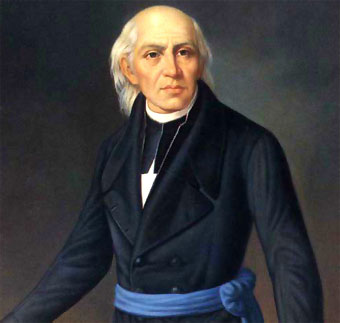
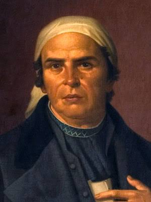
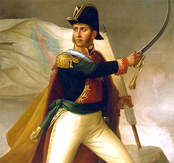

HÉROES DE LA INDEPENDENCIA

Miguel Hidalgo
• Rol: El Padre de la Patria.
• Aporte: Encabezó el Grito de Dolores el 16 de septiembre de 1810, iniciando el movimiento independentista y unificando al pueblo insurgente.

José María Morelos y Pavón
• Rol: El Siervo de la Nación.
• Aporte: Líder militar y político de la segunda etapa; redactó los Sentimientos de la Nación, sentando las bases institucionales de México.

Josefa Ortiz de Domínguez
• Rol: La Corregidora.
• Aporte: Pieza clave de la Conspiración de Querétaro; envió el aviso oportuno a los insurgentes para iniciar la lucha tras ser descubiertos.

Ignacio Allende
• Rol: General insurgente.
• Aporte: Estratega militar del primer periodo de la lucha, quien organizó y comandó las tropas iniciales junto a Miguel Hidalgo.

Vicente Guerrero
• Rol: Caudillo de la Resistencia.
• Aporte: Mantuvo viva la llama independentista en el sur durante los años más difíciles; pactó la paz final con el Abrazo de Acatempan.

Agustín de Iturbide
• Rol: Consumador de la Independencia.
• Aporte: Comandante del Ejército Trigarante que proclamó el Plan de Iguala e hizo la entrada triunfal a la Ciudad de México en 1821.